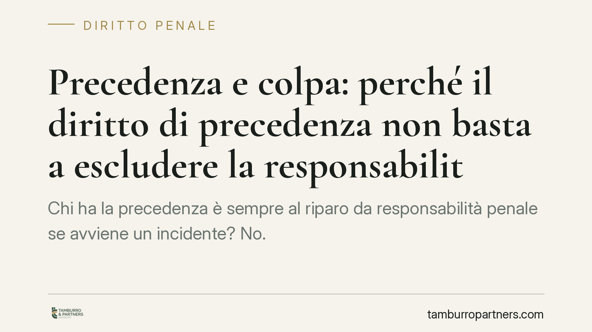

Precedenza e colpa: perché il diritto di precedenza non basta a escludere la responsabilità penale
Chi ha la precedenza è sempre al riparo da responsabilità penale se avviene un incidente? No. Secondo l'orientamento della Suprema Corte, il rispetto formale della regola non basta: conta la condotta concretamente esigibile. Un tema che pesa in caso di lesioni o omicidio stradale, dove la ricostruzione della dinamica diventa decisiva.

Il caso e la domanda di fondo
Un automobilista impegna un incrocio avendo la precedenza. Un motociclista sopraggiunge e la collisione è mortale. Il conducente favorito è automaticamente esente da colpa? La risposta non è scontata.
Il diritto di precedenza è disciplinato dall'art. 145 del Codice della Strada, che impone al conducente non favorito di dare la precedenza e regola i comportamenti agli incroci. Da questa norma discende il cosiddetto principio di affidamento: chi rispetta le regole può confidare che anche gli altri utenti della strada le rispettino, senza doversi attendere ogni possibile violazione altrui.
I limiti del principio di affidamento
Qui sta il punto delicato. Secondo l'orientamento consolidato della Suprema Corte, il principio di affidamento non è assoluto. Esso viene meno quando le circostanze concrete rendono prevedibile la condotta scorretta dell'altro conducente.
Occorre distinguere due piani. Il primo è la regola violata: chi non ha rispettato la segnaletica ha commesso un'infrazione. Il secondo è la condotta concretamente esigibile: ci si chiede se il conducente favorito, con l'attenzione e la prudenza dovute, avrebbe potuto avvedersi del pericolo ed evitare l'impatto.
Se il conducente con precedenza procedeva a velocità inadeguata, non ha guardato con attenzione o ha ignorato segnali di pericolo percepibili, il solo diritto di precedenza non lo mette al riparo. La colpa penale, infatti, non si esaurisce nel rispetto formale di una norma: valuta la diligenza in concreto.
Quando il favorito non risponde
Attenzione a non ribaltare il ragionamento. Il conducente favorito non è sempre corresponsabile. La responsabilità è esclusa quando il pericolo era imprevedibile e inevitabile: se l'altro veicolo è sopraggiunto in modo del tutto anomalo e improvviso, tale da non lasciare margine di reazione a chi guidava con la dovuta prudenza, la colpa non è configurabile.
La valutazione è dunque sempre calata sul caso concreto: velocità, visibilità, tempo di reazione disponibile, comportamento tenuto da entrambi.
Omicidio stradale e lesioni stradali: due fattispecie distinte
Sul piano penale è utile distinguere. Quando dall'incidente deriva la morte, si applica l'art. 589-bis del Codice penale, che disciplina l'omicidio stradale colposo, con circostanze aggravanti specifiche (ad esempio guida in stato di ebbrezza o velocità gravemente eccedente i limiti). Quando invece derivano lesioni personali, entra in gioco l'art. 590-bis, che regola le lesioni personali stradali gravi o gravissime.
In entrambi i casi il fondamento è la colpa: la mera titolarità del diritto di precedenza non esclude, di per sé, l'elemento soggettivo del reato.
Implicazioni pratiche
Per chi guida, il messaggio è chiaro: la precedenza è un diritto, non una franchigia. Adeguare la velocità alle condizioni dell'incrocio e mantenere il controllo del veicolo restano doveri autonomi, il cui inadempimento può fondare una responsabilità penale anche in capo al conducente favorito.
Per chi si trova coinvolto in un procedimento, la partita si gioca sulla ricostruzione della dinamica. Stabilire velocità, punto d'urto, visibilità e tempi di reazione può spostare l'esito sull'accertamento della colpa.
Cosa fare in concreto
- Modera la velocità in prossimità di incroci e intersezioni, anche quando hai la precedenza: la prudenza in concreto è un dovere autonomo.
- Non presumere che gli altri rispetteranno sempre le regole: mantieni margini di reazione dove la visibilità è ridotta.
- Conserva ogni elemento di prova dopo un incidente: fotografie dello stato dei luoghi, posizione dei veicoli, eventuali testimoni e dati di dispositivi di bordo.
- Presta attenzione alle dichiarazioni rese a caldo alle autorità: descrivi i fatti in modo preciso, senza ricostruzioni affrettate.
- Va ricordato che, negli incidenti gravi, la dinamica può essere ricostruita tramite consulenza tecnica cinematica, strumento processuale che consente di verificare velocità, tempi e possibilità di evitare l'impatto.
Contributo informativo a cura di Tamburro & Partners Avvocati - Avv. Giuseppe Tamburro. Non costituisce parere legale.
Ogni condominio ha una storia a sé.
Se gestisci un'amministrazione e vuoi un confronto su una specifica questione condominiale, scrivi allo studio. Ti rispondiamo entro un giorno lavorativo.